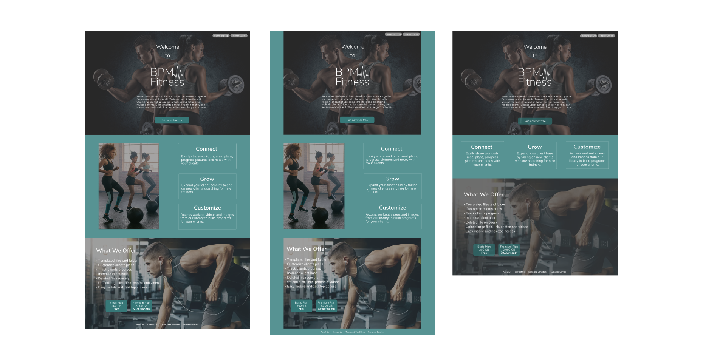
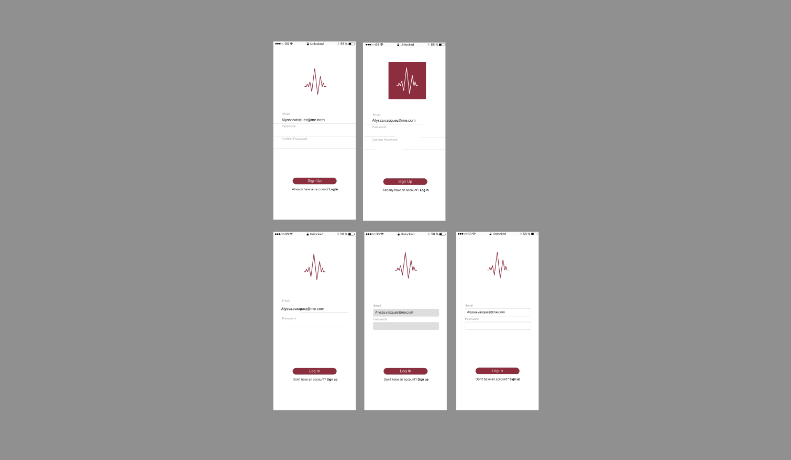

BPM Fitness makes is easy for personal trainers and their clients to connect and share content.
There are few applications that connect personal trainers with their clients. So, I created a mobile and web based application that allows trainers and their clients to easily share information with each other.
Trainers need an app that allows them to organize multiple clients and to train clients all over the world. Clients need a way to view all this information and share information in return.
Create BPM Fitness to ensure that connecting and sharing information between personal trainers and their clients is easy and efficient.
The main apps on the market that connect personal trainers with clients are Gain Fitness and My PT Hub. Both apps promise trainers they can build their business and clientele. However, these apps are marketed to the trainers not their clients and do not allow for two-way communication.

I began with a survey to learn the following information:
What users use cloud storage for.
What features they use and what features they want.
How important is sharing files, real time collaboration, easy organization and file recovery.
73% of participants were interested in personal training and fitness and of those participants:
91% were interested in viewing workouts, recipes and nutritional information
82% were interested in uploading progress pictures and leaving comments
73% wanted access to pictures and videos of exercises.
Of the participants that were interested a personal training app, 55% are men, 72% are between the ages 18 and 34 and 55% have a bachelor's degree. All of this information helped me to understand the users when developing this application.
User Personas are build using the demographics found from the user survey so that a clear version of the user is kept in mind throughout the entire design process.
Target market research shows that personal trainers are college educated or have a training certification and are looking to grow their client base and increase their income. Clients are mostly male looking for weight training and women looking for wieght loss methods like high intensity training and muscle toning. Nealry 40% of clients are millenials, indicating that they are comfortable with technology.

Mark
35, Male
Fitness Trainer
Los Angeles, CA
Mark is interesed in the idea of a cloud based sharing application designed to connect personal trainers and their clients especially, for his clients that live in other cities.
This app would also help him keep track of his LA clients’ various routines, goals, progress and diets, something he admits he could use help with.

Giselle
28, Female
Photographer
San Diego, CA
She is dedicated to working out about three times a week but her schedule makes it hard to work with personal trainers. Giselle likes to be able to workout from her home with limited equipment.
She wants a plan tailored to her specific goals, diet plans/recipes and to be able to communicate with a trainer. The last workout plan was bought online, did not fit her exact needs and did not allow for collaboration.

Brandon
23, Male
Student
Boulder, CO
Brandon spends a lot of time working out and lifting weights in the school gym and would like an app that allows him to work with a personal trainer. He would like to be able to view training materials and guides for his specific goals.
Brandon would also like access to recipes, since he doesn’t know much about cooking, and wants to gain muscle as quickly as possible without relying on so many supplements.
Clear user personas helped when it was time to determine the to the user stories to think through a well-rounded app with the essential features for both the client and the trainer. High priority stories included the onboarding process, logging in, adding content, organizing content, deleting content, and signing out.
The same user stories became user flows, essentially a path of each task. Building the users flows was necessary in understanding how each page of the app worked, before diving right into the visual design.
Then came wireframes and sketches of what each page would look like and an idea of navigating from one page to the next. The wireframes were tested by three users and received positive feedback as far as functionality goes. Users were asked to sign up for an account, add a new progress picture, add a new check in, and find the workout for day one and add a new meal plan.
The feedback from the users testing was essential in determining if the app was intuitive. The feedback indicated that the both versions of the app were easy to use and straight forward.
The goal was to create a brand that is inclusive for all types of training. Not everyone lifts weights or does cardio so I stayed away from the classic dumbell and running logos. BPM (beats per minute) represents all fitness types and the health benefits from them.
The brand characteristics are strength, energy, fitness, health, versatility and flexibility.
I chose the magenta color for the main color for the mobile app for the clients because it is bright and energetic without being overwhelming. The teal color is the main color for the desktop/web version of the app for trainers because blue is the color of trustworthiness and responsibility but the green hue makes it more vibrant and energetic.
Various screen were voted on by users to determine their preference. Users voted on the sign up and login screens for the mobile version and chose the simplest entry forms. They voted on the background image for the desktop version sign up page and well as the main layout for the landing page.
 Then users were tested on the clickable prototype to ensure that the app is easy to use and users understand how to navigate it. It was important to include a script with basic information about the app and what tasks they needed to complete. Tasks for the mobile version included signing up, adding a progress picture, adding a check in, adding a new meal plan, finding the workout for day one and signing out.
The feedback supported the functionality of the desktop and mobile versions of the app. Users had a really easy time navigating through the clickable prototypes and nothing need to be changed based on their feedback.
I had a great experience building this app and coming up with an idea that will do really well in the fitness market. Completing research and analyzing the competition was extremely important in verifying if there was even space for an app like this. Looking at the features of the competition helped me determine what features BPM Fitness needed to stay competitive as well as additional features to set us apart.
At first, I took on a really big project with way more features that I later realized were beyond the scope of this project. Had I had more time, I would have loved to add in those features such as the ability to add comments and recovering deleted files. I’m glad I was able to determine the scale of this project early on and believe it came out with all the necessary features.